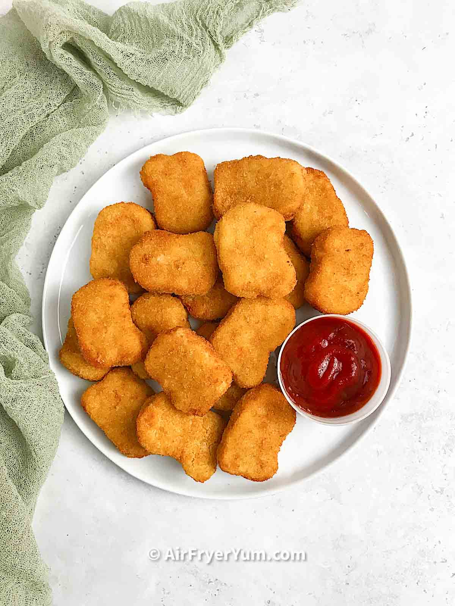

Chicken nuggets recipe

Description
These homemade chicken nuggets are a "Chick Fil A" copycat, make sure to try them out!
Ingredients
- 3 pounds boneless, skinless chicken breasts, cut into 1- inch chunks
- 1 cup dill pickle juice
- 1/2 cup milk
- 1 tablespoon hot sauce
- 1 1/2 cups flour
- 1 1/2 cups plain bread crumbs
- 1 tablespoon garlic powder
- 1 tablespoon kosher salt
- 2 teaspoons black pepper
- 2 teaspoons paprika
- 2 tablespoons powdered sugar
- 1 quart canola oil
Steps
- Place the chicken chunks into a large zip-top bag. Pour the pickle juice, milk, and hot sauce into the bag and seal. Massage the mixture together and refrigerate for at least 4 hours, or overnight.
- In a large bowl whisk together the flour, bread crumbs, garlic powder, salt, pepper, paprika, and powdered sugar.
- Drain the chicken from the pickle juice mixture. Working in batches coat the chicken chunks in the breading, making sure all sides are coated.
- Turn your oven onto warm and set aside a large baking sheet.
- In a large Dutch oven heat the oil over medium heat. Oil should reach 350°F, or when you place the back of a wooden spoon into the oil bubbles should form around it immediately.
- Working in batches, place chicken into the hot oil. Allow the chicken to fry for 4-5 minutes, until it is golden brown.
- Using a slotted spoon, remove the chicken nuggets from the oil and place onto the baking sheet. Place the baking sheet in the oven to keep the nuggets warm while you fry the remaining chicken.
- Serve warm!